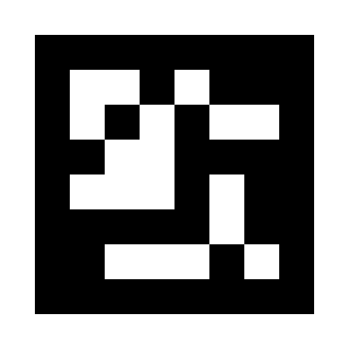

このページを倍率 100%（「実際のサイズ」）で印刷すると、黒い正方形の一辺が 100mm になります。デモ側の既定値（?markerMm=100）と一致します。
画面に表示したまま使う場合、画面上の 1mm は物理的な 1mm と一致しません。定規で黒い正方形の一辺を測り、デモの URL に ?markerMm=実測値 を付けてください。 印刷でも拡縮がかかった場合は同様に実測値を渡してください。
← デモへ戻る デモ一覧へ